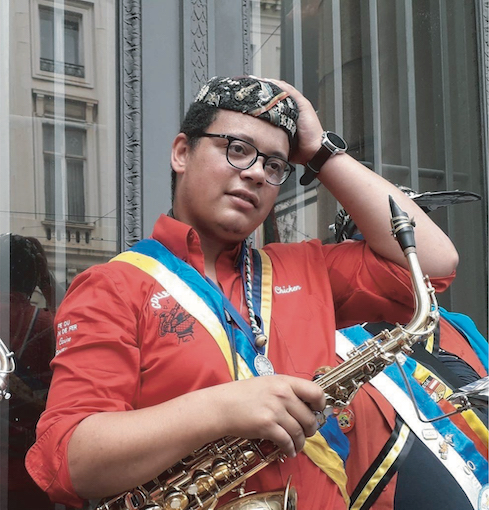

J’ai décidé de faire mon baptême à la Régionale Tournai-Mouscron (RTM) de Namur en 2017 pour trois raisons :
- la première est que je faisais déjà partie de l’Enghiennoise de Louvain-la-Neuve, Enghien qui entre dans le territoire de la RTM.
- la deuxième était que mon grand-père venait de Comines-Warneton qui fait également parti du territoire RTM.
- la troisième tout simplement car mon parrain du Cercle Pharma, Antoine Vessié, en faisait parti et me motivait à le faire.
Mes motivations d’entrée au Collège des Archivistes sont avant tout d’ajouter ma pierre à l’édifice qu’est le folklore estudiantin.
Mon but étant de solidifier cet édifice afin de ne pas oublier ce qu’ont bâti nos prédécesseurs.
Ainsi, si un jour le folklore étudiant s’éteind ou nait, on aura toujours une trace de celui-ci.
C’est en grande partie le but du Musée Belge des Traditions Estudiantines et donc c’est pour celà que je veux y entrer.
Mes motivations pour ce travail, elles, sont avant tout à cause du flou ambiant dans les connaissances du folklore Namurois aujourd’hui. J’ai donc voulu rassembler dans ce travail les informations importantes pour toute personne voulant approfondir au-delà de son syllabus de calotte, mais également pour les étrangers s’y intéressant car souvent la calotte Namuroise n’est pas très connue dans les autres villes.
Enfin, j’espère qu’en lisant ce travail, les plus jeunes pourront apprendre du passé et les plus âgés découvrir comment le folklore Namurois a évolué !
Un grand merci à tout ceux qui m’ont aidé pour ce travail et particulièrement mon parrain Maxence De Prez, Lionel Dehart, Pascal Vanbel, Jean-Philippe Rivière et Ludovic Grégoire.